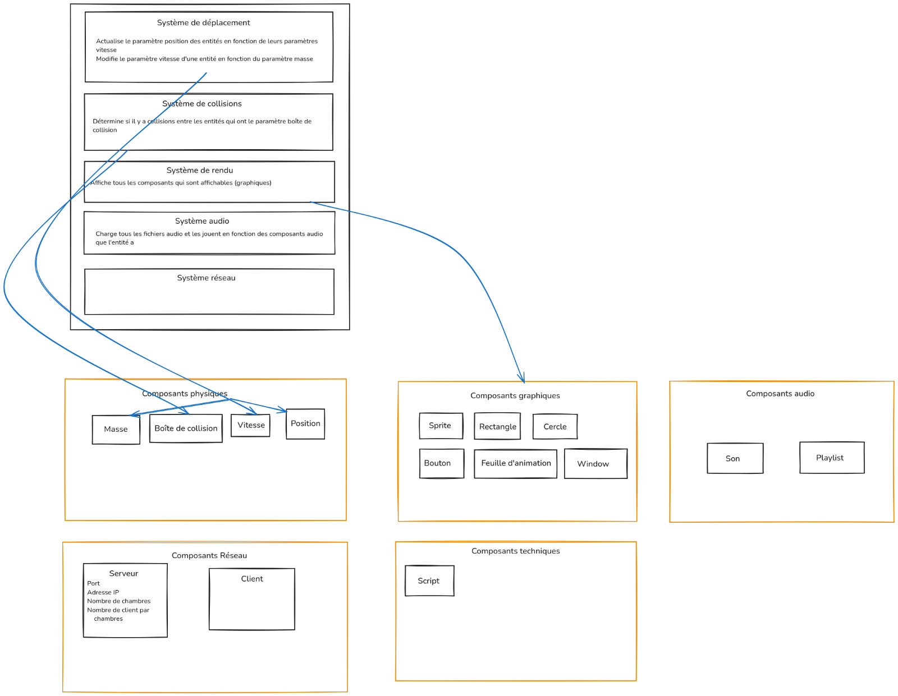

Architectural diagram
Following the ECS architecture. This is the final architecture we came up with.
{kind=link}
The ECS (Entity Component System) An ECS is an architectural design pattern, mostly used in video game development. This pattern follows the principle of composition over inheritance. Instead of defining an inheritance tree as usual in Object Oriented Programming, types are split into small yet highly reusable components. A common composition pattern in OOP would be to put functions modifying these components together with the components, for example a physics components containing mass, velocity, acceleration and hitbox together with functions to move and collide entities that have this component. In an ECS, we try to keep components as light as possible (more on that later). However, an issue arise if we try to put logic inside of components, as part of this logic could depends on multiple attributes components if they are too “small”. One way to prevent this issue while keeping components as small as possible is taking the logic (functions) outside of components. These standalone functions are then free to depend on an arbitrary number of components. We call these functions systems.